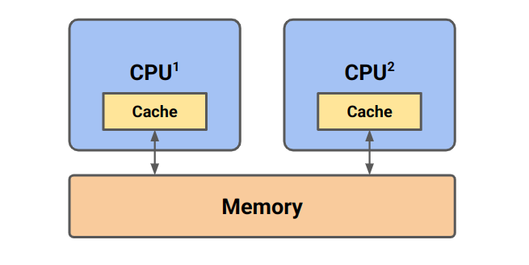
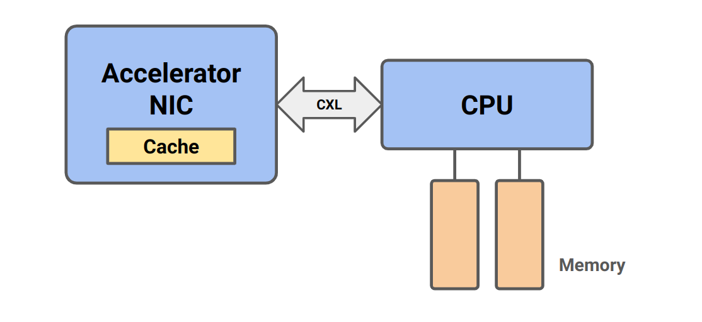
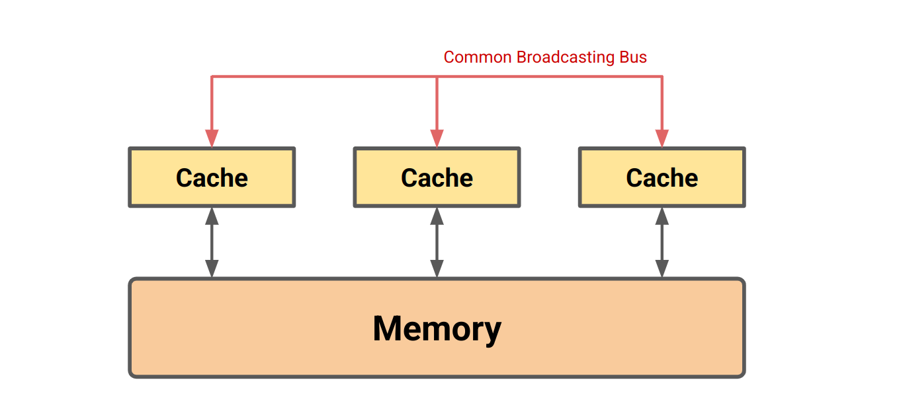

Oli's Little Guide to CXL

I'm working on a research project about CXL (Compute Express Link) and distributed memory, so I am adding a new little guide about what CXL actually is. Hopefully in a way that you can read this in 20 minutes and understand the motivation behind it. Then, you can look up the different parts in more detail.
I'm a computer scientist. This means that I don't know anything about mathematics and I don't know anything about electrical engineering. Some would call this useless. But it is what I am and I will explain it in a way that makes sense to me.
What is CXL?
CXL is just an open standard interconnect (created by Intel). It must be implemented at the hardware level. There are three protocols as part of this standard. (1) CXL.io (2) CXL.cache (3) CXL.mem.
CXL.io
This is functionally the same as PCIe. We use it for
- Device discovery
- Status reporting
- Virtual to physical address translation TODO
- Direct memory access (DMA)
What is PCIe?
PCIe transfers data fast.
A root complex is the interface between the system CPU and memory and the rest of the PCIe structure. The root complex is either integrated into the CPU directly or is external to the CPU as a discrete component.
I quoted that bit so I don't get it wrong. The root complex has some control components to set up a PCIe link. It also has some timing parts. There's a pretty complicated setup process in PCIe where you have to negotiate how the connection will work, that's not really important.
TODO: ATS
TODO: PCIe vs DDR
Devices and Hosts
In CXL we have 'CXL hosts' (or 'CPU hosts' or 'host CPUs' etc.) and 'CXL devices'. CXL lets us attach new devices to our host CPU. The devices communicate with our CPU and we communicate with the devices through CXL.
CXL Protocols
CXL.io is functionally identical to PCIe.
CXL.cache allows CXL devices to access and cache (locally) memory from the CPU host.
CXL.mem allows the host CPU to access device-attached memory. This is referred to as "Host managed Device Memory" (HDM).
The latter two are special because they allow these memory operations to happen in a 'cache coherent' way.
It's All About Memory
CXL is about accessing device memory from your host CPU and vice versa. CXL is all about memory Don't get any ideas that CXL is for something else.
What is Cache Coherence?
Imagine we have lots of CPUs all accessing some shared memory. Accessing shared memory is slow, so they each have their own cache that they put blocks (cache lines) of memory in so that they can read/write to that memory really fast. This cache is much smaller than main memory so it can only hold a small subset of what's available in memory. A diagram of such an architecture would look like this:

Consider the case where CPU 1 writes some value. Upon write, the cache line is moved from main memory into its cache, then it is updated. If, before we write-through to main memory (if that is the policy of the CPU), CPU 2 decides to read the same cache line, it must know that the CPU 1 has updated it. Otherwise, there will be some inconsistency between the two caches.
This is the whole problem of cache coherence and we need a way to manage it. CXL works in a cache coherent way, whereas regular PCIe memory accesses do not. Wikipedia says this means:
In a cache coherent system, if multiple clients have a cached copy of the same region of a shared memory resource, all copies are the same.
I'm not a huge fan of this definition. Really, it should say that we have some mechanism to wait for those copies to be the same or something. Let's look at a use case of CXL that takes advantage of this.
Use Cases
The CXL consortium outline loaddsss of use cases. Here's an example:
We have some kind of accelerator (processor that does a certain job better than our CPU) e.g. a GPU. If a GPU wants memory at the moment, it does so with a non-coherent DMA over PCIe.
- Allocate buffer in host memory
- GPU makes request to the RC
- Vaddr is translated
- Memory controller responds to RC
- RC responds to GPU
- GPU puts memory in the right spot etc.
It would be much easier and more useful if we could just have a cache on the accelerator and do access of host memory through normal reads and writes.

In the case where the cache is never invalidated (which is the assumed case in the 'old way') there shouldn't be any speed decrease. But we probably want to access parts of the same data structure from the host or the devices. More formally (from the CXL consortium):
This poses a barrier for new usage models such as Artificial Intelligence (AI), Machine Learning (ML), and smart network interface cards (NICs) where devices seek to access parts of the same data structures simultaneously with the CPU using device-local caches without moving entire data structures back and forth.
Implementation
This section talks about how CXL actually does this.
MESI Protocol
Time for a lesson in cache coherency protocols. This is the hardware protocol that enforces that our caches are 'coherent'. A pretty common protocol is 'MESI' and it is also the one that CXL uses. Each of these four letters represents a different state that a cache line can be in. Specifically they encode two things: (1) is the cache line the same as in main memory? (if it is, we call it 'clean', otherwise it's called 'dirty') (2) Do any other caches have a copy of this?.
| Clean | Exclusive | Name | |:-----:|:---------:|:-------------:| | ⛔ | ⛔ | Doesn't exist | | ⛔ | ✅ | Modified (M) | | ✅ | ⛔ | Shared (S) | | ✅ | ✅ | Exclusive (E) |
The final state 'I' is really just a marker to say a cache line is free. It stands for 'Invalid'.
Whenever we do a read to some cache, we broadcast on some bus "hey everyone, I want to read this thing". If some other cache has that cache line in state M, it broadcasts back "wait, I already have that". Then, we can read the value from it and set both states to S. Other states result in different resolution methods. For example, if some cache wants to update the state of some data from S to M (because it writes to it), we need to invalidate all other copies.
This is just one of many possible 'snooping' designs. A snooping coherence protocol is one that works by caches broadcasting updates and other caches making sure that they snoop in on these broadcasts and make sure they update their state accordingly. The specifics don't really matter, you just need to understand that this can be achieved like this.
Our previous diagram needs to be updated to look something like this:

CXL's Coherency Protocol
The CXL developers want the complexity to be at the hosts.
20:00 https://dl.acm.org/doi/10.1145/3669900
Home Agent is the agent on the Host that is responsible for resolving system wide coherency for a given address.
<!-- CXL over ethernet --> <!-- https://www.rambus.com/blogs/compute-express-link/#respond -->marios what do you think about eie
PIM (processing in memory)
<!-- https://ieeexplore.ieee.org/abstract/document/8579261 --> <!-- https://dl.acm.org/doi/10.1145/3669900 -->-
A key reason for this mismatch in scaling is the pin-inefficiency of the parallel DDR interface. Scaling up by adding DDR channels significantly adds to platform cost and introduces signal integrity challenges. In principle, PCIe pins would be a great alternative due to their superior memory bandwidth per pin, even with the added latency of serialization/ deserialization, as discussed later. For example, a x16 Gen5 PCIe port at 32 GT/s offers 256 GB/s with 64 signal pins. DDR5-6400 offers 50 GB/s with ∼200 signal-pins.
-
PCIe also supports longer reach with retimers,1 which would allow moving memory farther away from CPUs and using more than 15 W of power per DIMM, resulting in superior performance. Unfortunately, PCIe does not support coherency, and device-attached memory cannot be mapped to the coherent memory space. Thus, PCIe has not been able to replace DDR.
-
I should talk about what CXL is originally made for and then explain how that is not DSM, but there are som DSM adjacent things that mean maybe DSM can work.
2 CXL Background and Design Choices
Cache-coherent interconnects (QPI, Bluelink, NVLink) have historically been symmetric. Each processor has its own cache that acts as a bridge between the processor and main memory. This is exceedingly complicated to deploy, especially in-light of many processors using different coherency protocols.
CXL is asymmetric.
CXL aims to be backwards compatible and present new features as needed with new versions.
Direct peer-to-peer access from a PCIe/CXL device to the coherent HDM memory hosted by a Type 2/Type 3 device without involving the host processor if no conflict arises. This results in low latency, less congestion, and high bandwidth efficiency, which is critical for large systems. For example, in Figure 12, the NIC to memory is 8 hops away using direct P2P vs. going through a CPU is 16 hops away round-trip.
???
memory access latency from a CXL device would be similar to memory access from a DDR bus in a remote socket. While this is higher than memory access from a DDR bus in a local socket [79], in a 2-socket symmetric multi-processing system, it is acceptable due to NUMA (non-uniform memory access) optimization and the higher bandwidth resulting in lower latency in non-idle systems [8, 9, 10].
TODO: probably not useful but how exactly do the snoops work. I think it's sufficient to know that the snoops are host managed for CXL.cache